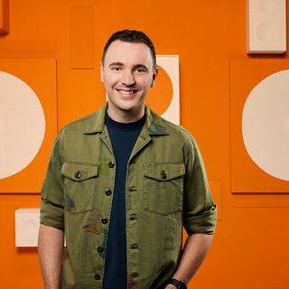

Programmering
-
SLAM! Non-stop
 00:00 - 06:00
00:00 - 06:00
Tijdens SLAM! non-stop hoor je de beste tracks van dit moment non-stop achter elkaar.Of je nu op zoek bent naar de nieuwste dance hits, popnummers of de laatste releases, dit programma zorgt ervoor dat je avond compleet is met geweldige muziek.

 SLAM!
SLAM!

-
Marijn Oosterveen
06:00 - 07:00
Marijn Oosterveen
-
Early Birds
07:00 - 10:00
In Early Birds neemt Anoûl Hendriks je van maandag tot en met donderdag tussen 07.00 uur en 10.00 uur mee tijdens de start van je werkdag met een frisse kijk op de wereld, actuele onderwerpen en vooral veel muziek.
Anoûl Hendriks
-
Patrick Wolda
10:00 - 12:00
Patrick Wolda
-
Housuh in de Pauzuh
12:00 - 14:00
Get ready for the lunch en wees voorbereid op een trip down memory lane, want de playlist gaat alle kanten op. Van clubknallers uit de 00's, naar hiphopbangers uit de 90's, dikke hits van nu, maar ook typische guilty pleasures. Je hoort het allemaal voorbij komen in één mix!
 Raoul Schram
Raoul Schram
-
Thomas van Empelen
14:00 - 16:00
Thomas van Empelen
-
SLAM! Middagshow
16:00 - 20:00
De SLAM! Middagshow staat voor gezellige chaos. Spannend, onvoorspelbaar, tikkie vreemd, maar wel lachen! Jarno van der Wielen, Erik-Jan Rosendahl en Julia Maan houden je op de hoogte van het laatste nieuws en er komen verschillende toffe gasten langs!
Jarno van der Wielen, Erik-Jan Rosendahl en Julia
Maan
-
SLAM! Non-stop
20:00 - 23:59
Tijdens SLAM! non-stop hoor je de beste tracks van dit moment non-stop achter elkaar.Of je nu op zoek bent naar de nieuwste dance hits, popnummers of de laatste releases, dit programma zorgt ervoor dat je avond compleet is met geweldige muziek.
SLAM!
-
Oh Wat Een Nacht
00:00 - 04:00
Je hoort de beste muziek van Radio Veronica non-stop in Oh Wat Een Nacht!
 Radio Veronica
Radio Veronica
-
The Warming Up
04:00 - 06:00
Tussen 04:00 en 06:00 uur word je wakker met Lisanne Bronkhorst in The Warming Up.
 Lisanne Bronkhorst
Lisanne Bronkhorst
-
Ekdom in de Morgen
06:00 - 09:00
Opstaan met Ekdom in de Morgen betekent opstaan met een lach! Elke werkdag sleurt Gerard Ekdom je mee door de ochtend: van 06:00 tot 09:00 uur.
 Gerard Ekdom
Gerard Ekdom
-
Goud van Oud
09:00 - 12:00
Marisa draait elke werkdag van 09:00 tot 12:00 uur de muziek waar jij van houdt in Goud van Oud!
 Marisa Heutink
Marisa Heutink
-
Sander Hoogendoorn
12:00-14:00
Van 12:00 tot 14:00, speciaal voor jou, heeft Sander Hoogendoorn de beste playlist voor tijdens de lunch.
Sander Hoogendoorn
-
De Bonanza
14:00-16:00
De Bonanza met Rob Stenders is elke werkdag van 14:00 tot 16:00 uur te horen op Radio Veronica. Jij bepaalt welke muziek er wordt gedraaid. Vraag jouw favoriete platen aan via de gratis Radio Veronica app.
 Rob Stenders
Rob Stenders
-
Wout & Frank
16:00-19:00
De middagshow van Radio Veronica met Wouter van der Goes en Frank van 't Hof.
 Wouter van der Goes & Frank van 't Hof
Wouter van der Goes & Frank van 't Hof
-
Martijn Muijs
19:00-21:00
Je hoort Martijn Muijs elke maandag t/m donderdag 19:00 - 21:00 uur met de beste muziek voor het begin van je avond.
 Martijn Muijs
Martijn Muijs
-
Frank tot Laat
21:00-23:59
Sluit je dag af met Frank van der Lende. Met live muziek, goede gesprekken en de fijnste muziek voor de late avond.
 Frank van der Lende
Frank van der Lende
-
100% NL Non-stop
00:00 - 06:00
Luister Non-Stop naar jouw favoriete Nederlandse 100% NL artiesten!
100% NL
-
Goedemorgen 100% NL
06:00 - 10:00
Hoe vroeg jouw wekker ook gaat, met ochtendhelden Giorgio Hokstam en Ingrid Jansen start jouw dag altijd met een feestje! Elke werkdag tussen 06.00 - 10.00 uur maken Giorgio & Ingrid jouw dag!
Giorgio Hokstam, Ingrid Jansen
-
Erik van Roekel
10:00 - 13:00
De Achterhoekse Erik van Roekel is een échte pretparkenfanaat, muziekliefhebber en levensgenieter! Tijdens de radioshows van Erik van Roekel krijg je gegarandeerd het leukste nieuws en de allerbeste hits!
Erik van Roekel
-
Colin Banks
13:00 - 16:00
Dé presentator van de 100% NL Top 20? Dat is Colin Banks! Je hoort Colin Je hoort Colin iedere werkdag tussen 13.00 en 16.00 uur en op zaterdag tussen 15.00 en 17.00 uur.
 Colin Banks
Colin Banks
-
Barry Paf
16:00 - 19:00
Barry is jouw vriend in de middag! Je hoort Barry paf iedere maandag t/m donderdag tussen 16.00 en 19.00 uur!
 Barry Paf
Barry Paf
-
Koen Hansen
19:00 - 22:00
Bij Koen wordt je iedere dag op een vlotte manier bijgepraat over het laatste (Nederlandse) nieuws. Voor de dagelijkse actualiteit, showbizz, sport én uiteraard de muziek en artiesten uit Nederland ben je bij Koen aan het juiste adres!
Koen Hansen
-
100% NL Non-stop
22:00 - 23:59
Luister Non-Stop naar jouw favoriete Nederlandse 100% NL artiesten!
100% NL
-
Sublime Night Shift
00:00 - 06:00
All night long funk, soul & jazzing
Sublime
-
De Sublime Ochtendshow
06:00 - 10:00
Elke maandag- tot en met vrijdagochtend van 06:00 tot 10:00 uur word je wakker met Jaap Brienen in De Sublime Ochtendshow. Begin opgewekt aan je dag met achtergrondverhalen, actualiteit, muzikale winacties en interessante ochtendgasten.
 Jaap Brienen
Jaap Brienen
-
Sublime Non-stop Werkdag
10:00 - 18:00
De soundtrack van je werkdag. Maandag tot en met donderdag van 10:00 tot 12:00 en van 13:00 tot 17:00 uur.
Sublime
-
Sublime Classics
18:00 - 20:00
Sublime
-
Sublime Evening Bites
20:00 - 22:00
 Sublime
Sublime
-
Sublime Smooth
22:00 - 23:59
 Sublime
Sublime